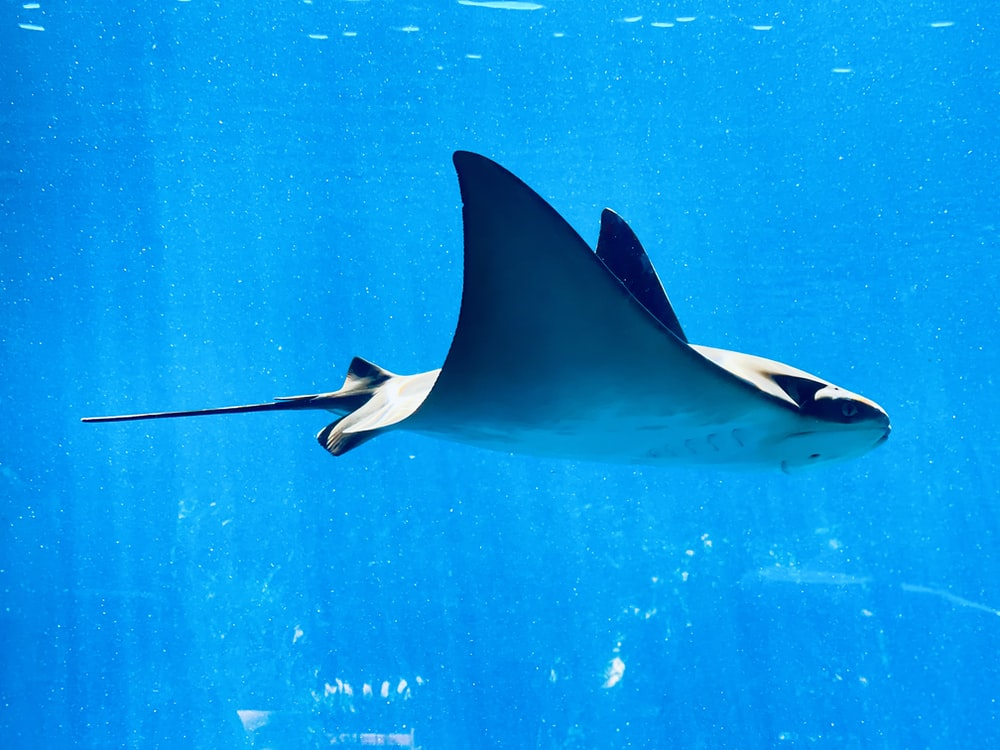

Adaptations
The large fins of the giant manta ray allow it to effortlessly glide through the water. Manta rays also have cephalic fins near their mouth that guide food into their mouth when eating. Because they need to consume large amounts of plankton, they have especially large mouths. Furthermore, giant manta rays have a flat body, so they are able to swim against the sea bed and in shallow waters to feed. Giant manta rays have been found feeding at depths less than 10 meters.
Defense and Offense
Giant Manta Rays have large stingers to protect from predators
Image Source
Giant Manta Rays are not aggressive, and are known as "gentle giants of the sea". Although they have stingers, they rarely harm humans.
Enemies
Giant Manta Rays are preyed upon by sharks, orcas, and humans. They are also vulnerable to entanglement in fishing nets, and are often caught as bycatch. Additionally, they are hunted for their gill rakers, which are used in traditional Chinese medicine.
Survival Status
In 2018, NOAA listed Giant Manta Rays as an endangered species. While the exact population count is unknown, sightings have decreased drastically in the last two decades. Because they feeds in shallow waters, many Giant Manta Rays are caught in fishing equipment or killed by boats. Furthermore, giant manta rays often only have one pup at a time and have a long gestation period, so population recovery is slow. Giant Manta Rays are sometimes hunted intentionally, especially around Asia.
Tiger sharks are one of the main predators of Giant Manta Rays.
Image Source